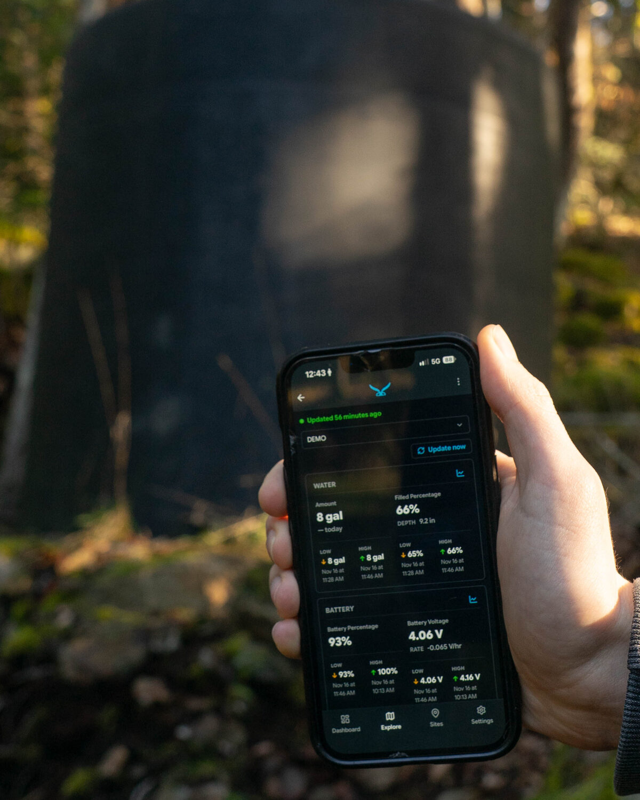

A fresh reading, in seconds
Readings arrive on a schedule around the clock. Need the level now? Press Update Now and a cellular or gateway unit measures and reports within seconds. At the tank, any unit answers your phone over Bluetooth.